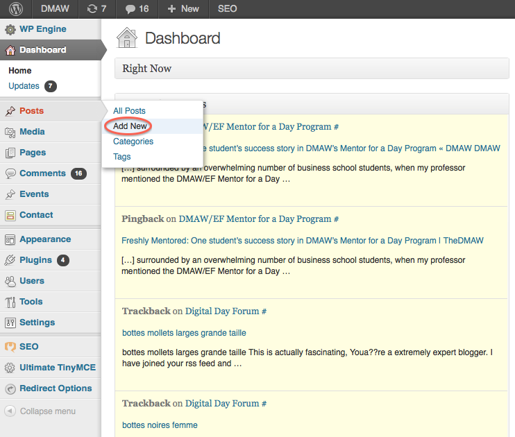
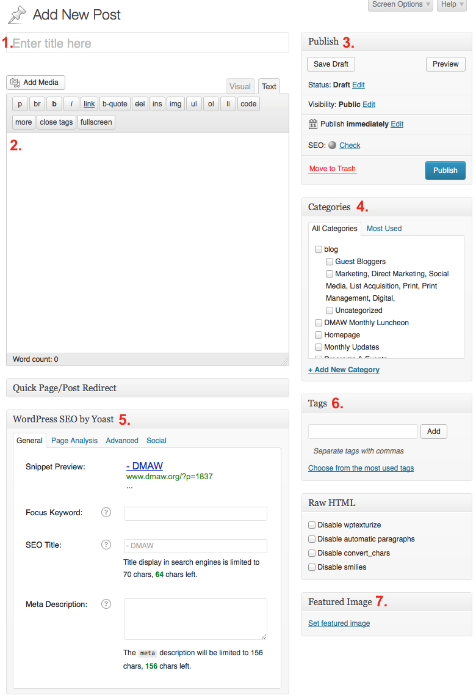

Dmawblog
Documentation for creating new blog posts
DMAWBLOG
Documentation for creating new blog posts
In order to add any changes to the DMAW website, log into Wordpress with your username and password at http://www.dmaw.org/wp-admin/.
I. Add a New Post
In order to create an post, click "Add new" under "Posts" pictured below.

Once the post is created, the following screen will appear. Follow the steps to create a post.

Enter Post Title - Add the name of the post in this field.
Add Content - Add the content of the post here.
-
Publish/Save the Post - This is where posts are saved as drafts, can be previewed, and finally published.
The "Status" indicates whether the post is in draft, pending review, or published status. The "Visibility" indicates whether the post is public, password protected, or private. Posts will most likely always be public. The "Publish" field can be edited to publish the post at a date in the past, immediately, or in the future. While creating the post, it's important to click "Save Draft" and "Preview" along the process to make sure everything saves and looks correct. Once the post is ready to be published (after the following steps are complete and previewed), click the "Publish" button.
Categorize the Post - This is where posts are categorized. This makes it so the web visitor can separate the posts by type. If you want the post to show up on the blog page, add the "blog" category, and if you want the post to show up at the bottom of the home page, add the "homepage" catergory in addition to any other categories. Be sure to make sure "uncategorized" is unchecked if you want the post to show up on the blog page.
Update the Post's SEO - Filling out this section with relevant words will help with the Search Engine Optimization for the post.
Add Tags to the Post - Add tags to the post here. Be sure to seperate tags with commas.
Set the Post's Featured Image (760px width x 300 height) - Add a featured image for the post. This will be the image that shows up as the banner for the post as well as the blog listing page. The image should be approximately 760px width x 300 height
II. Add an Image
To add an image for any event, blog post, sponsorship, etc., click "Media" > "Add New" and follow the steps below. It is recommended that all logos for sponsorship are uploaded as a .png or .gif file with a transparent background.


Select the file to upload and click upload.
Click edit to retrieve the url for the image.
Copy and paste the url circled into any field that requires a logo or image url.
III. Edit an Image
In Wordpress, any image that is uploaded in the media library can be cropped, scaled, rotated and flipped. This will come in handy for resizing speaker photos, event featured images, and logos. In order to edit an image, the image will need to be open in the media library. It is recommended to use the following image sizes:
- Speaker image - 200px width x 200px height
- Logo image - 260px width
- Featured image - 3000px width x 800 height
- Blog post featured image - 760px width x 300 height
Crop an Image


Click "Media" > "Library".
Click the name of the image to edit.
Edit the name of the image here. Please keep in mind the image url will change if you update the name of the image.
In order to crop an image, select whatever part of the image you want to kept after the crop.
After making a selection, click the crop button.
Click Save.
Make sure you click "Update" after you have saved the cropped image.
Resize an Image

Click "Scale Image" and enter the desired height or width (Wordpress will keep original dimension scale).
Click "Scale".
Click "Save" and then "Update" for the image to save the changes.